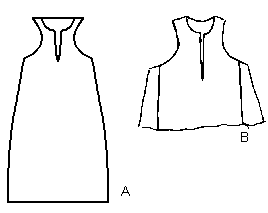

Museo de Telas Medievales Pellote de Fernando, Hijo de Alfonso X. And a fragment.
Return to Contents
Some Clothing of the Middle Ages - Tunics - Fernando's Pellote, by I. Marc Carlson, Copyright 1998 This code is given for the free exchange of information, provided the Author's Name is included in all future revisions, and no money change hands-